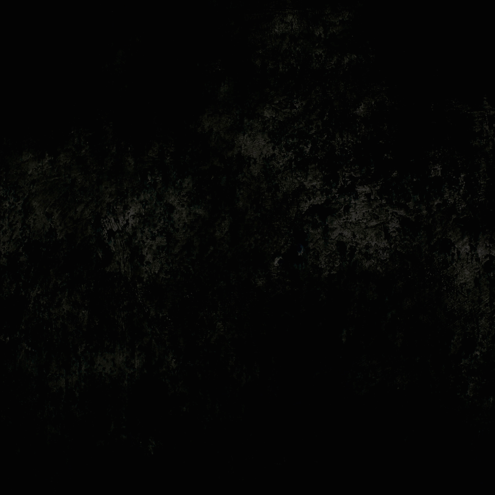
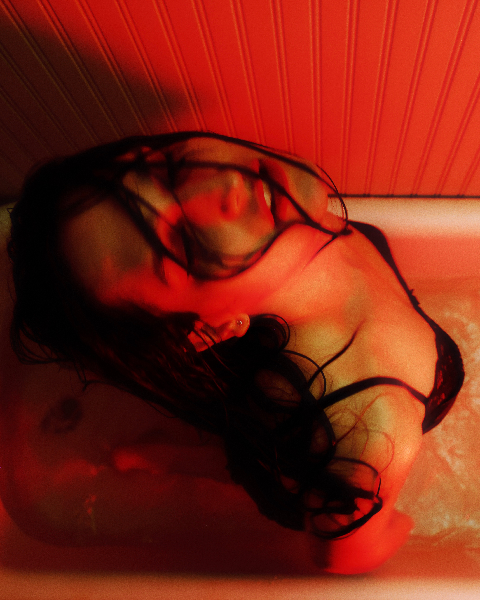
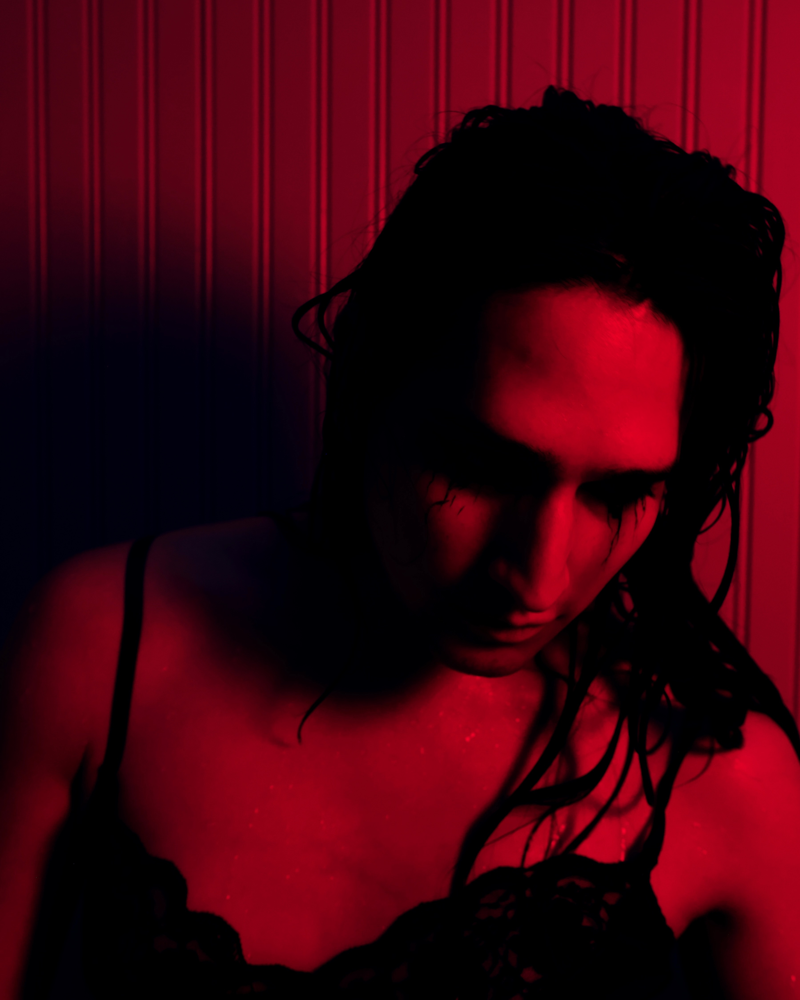
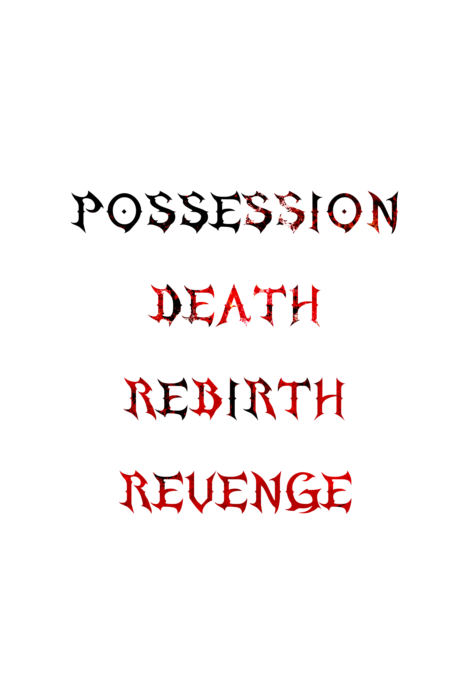
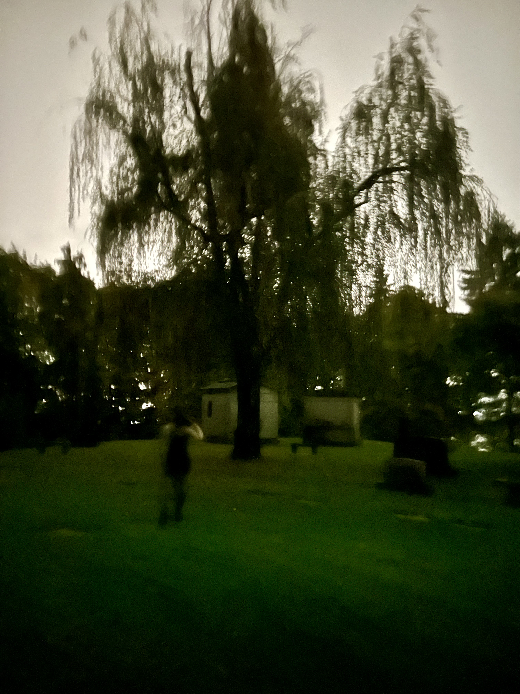
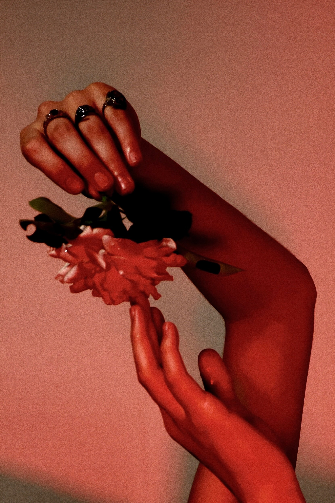

the mist

POSSESSION

rip my eyes right from my skulli carve my name into the wall
got so faded i lost my face again in the mud
murmurs in languages i share with my demon
a dialect of horrors they’re flora in my feelings
decorate the walls with my blood and my healing
might seem to be failing cuz i cant stop k*lling
i suffocate
in the middle of the street
i suffocate
they all
just fucking watch
as im convulsing from the pain
in my final breaths
take
all you do is take
my time, my body, my autonomy
live
i dont wanna live
if im only ever seen as an atrocity

rip my eyes right from my skulli carve my name into the wall
got so faded i lost my face again in the mud
murmurs in languages i share with my demon
a dialect of horrors they’re flora in my feelings
decorate the walls with my blood and my healing
might seem to be failing cuz i cant stop..

leave my body where i lieugly and bloody, god knows i tried
i tried
i wanna watch them all run away
i wanna watch them all run and pray
i wanna watch them all run away
from the monster they created
im a god to them
beg for my forgiveness
sins they commit against
their goddess
THE MIST
wash away all the memories, the pain
hold me through the worst of it
though my arms are cold
and my eyes have turned
the love you left intuits the mist
 sharp screams that cut deep like a knife
sharp screams that cut deep like a knife
stab sweet she laughs with no control, oh
fight back, like i had a chance
fatal levels of sanity raining down every word i
scratch through the mirror, think i found myself
blood soaked hands claw their way inside my head
death unbind chains with a promise and
conviction
steady is the body with a vengeance, my
affliction
horrible lie ripping the seams of my existence
oh their terrible eyes, they pierce the fabric
tearing jagged
and my ghost is dying in the hands of darker
fiends
still they’re bitter and cold shattered hope,
nothing remains
spiders spiral down in hordes, their crawling
legs
my tongue i pray
forgive me mother, i no longer love the corpse i
animate
im nothing more than what the world allowed for
me
to be
wont you take my hand in my last moments, i dont
wanna feel alone
still i fear there's no way home
with such incisions into my delicate heart

my path grows darker everydayi want the light, they keep from me
running down back ally ways
my body never belonged to me
another night of vile threats
a million cuts, a murderous sum
to feed the dark and bleed enough
to summon her, my behemoth
my right to be reborn i sign my name upon the door i
wear no
armor on my chest save for the necklace from my
mother
with teeth against the flesh again i butcher and
dismember,
with no remorse i emerge enraged, nightmare,
revenge, in lace
drag what’s left of you down to her through the
earth, it keeps her fed
kept you wide awake it makes her happier i see no
end
satisfy my monster with the hearts of the sick and
the twisted
enter abyss, your soul pays for your sins, i hope
WEEPING ROSE
i hear voices in my head
scratches on the wood
saying that im not dead
not yet, not well understood
the laughing starts to get to me
pull back the knife let me breathe
cuz i dont wanna see that part of me
let the face ive locked away
get out of

me, nowgod im fucking weak, yea
say it to my face
cuz you love to play the villain
with my hands around your throat, oh
wont you tell me once more
how you love to watch me break
hold me down and make me
bleed out
watch me bleed out
on my knees now
pray to your love
i know im not your first victim

you have my heart tied up so tight
i can feel your blade run up my thighs
i could try to scream but your holds so deep
ive never known such violent peace
cuz i dont wanna see that part of me
let the face ive locked away
get out of
me, now
god im fucking weak yea
say it to my face
cuz you love to play the villain
with my hands around your throat, oh
wont you tell me once more
how you love to watch me break
hold me down and make me
bleed out
watch me bleed out
on my knees now
pray to your love
move me
like a dramatic movie
tell me where you keep it
all your darkest secrets
no ones here to judge you
if you confess to me now
i can make you bloom forever
heart stop you’re just a
weeping rose
your weeping rose
on your knees now
pray to your love
is this healing? is this healing?
MY SLIP DRESS REVENGE
start to hate my face and rip it out of frame
then i catch their eyes just as they start to
laugh
 i manufactured insecurities to be more like you
i manufactured insecurities to be more like you
i thought making myself small was worth the toll
i can tell u right now it didn't make me feel
like
her
cuz whoever said powerlessness makes a girl
has never met a
god in real life
set them all on fire
god in real life
drown them all in acid rain
 we’ll haunt you
we’ll haunt you
we’ll bury you
take what’s ours
like we promised to
 pocket those hands next time you pass behind
pocket those hands next time you pass behind
cuz my blades not shy and neither is this bottle
of
wine
last words never sound too clear with a knife
right
down your throat
cuz a cat call is the quickest way to lose that
tongue of yours
my slip dress revenge is the sweetest drink to
steal
baby you cant make a sound with your neck under
my
heel

god in real life
set them all on fire
god in real life
drown them all in acid rain
we’ll haunt you
we’ll bury you
take what’s ours
like we promised to
production, performance, and lyrics by selena
vonichor
vocal production by EVANNIER on possession, the mist, and my
slip dress revenge
photos by siloh cairns, cyclopsphotography2021, and other
friends